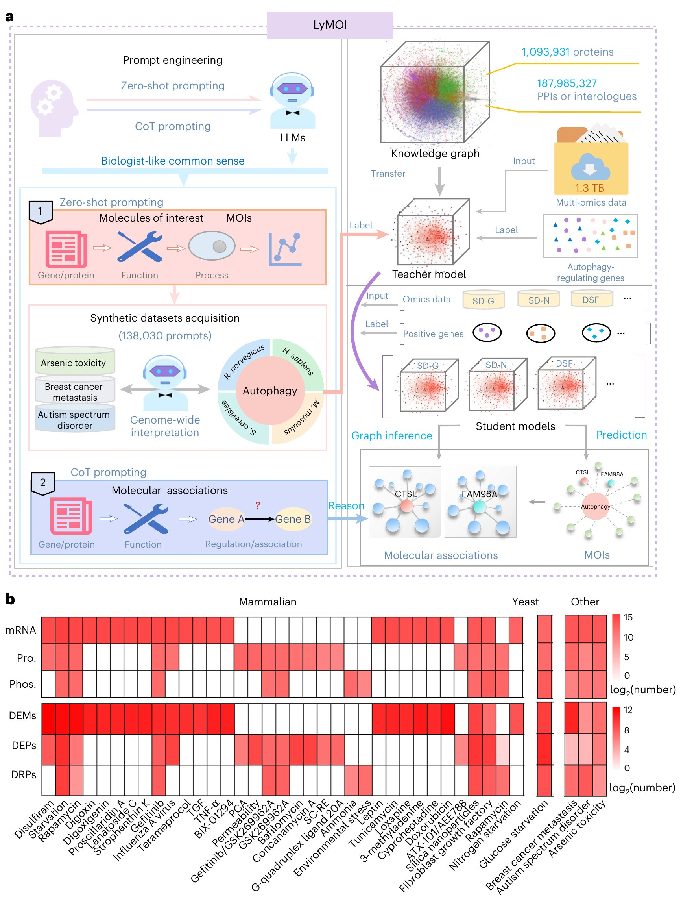
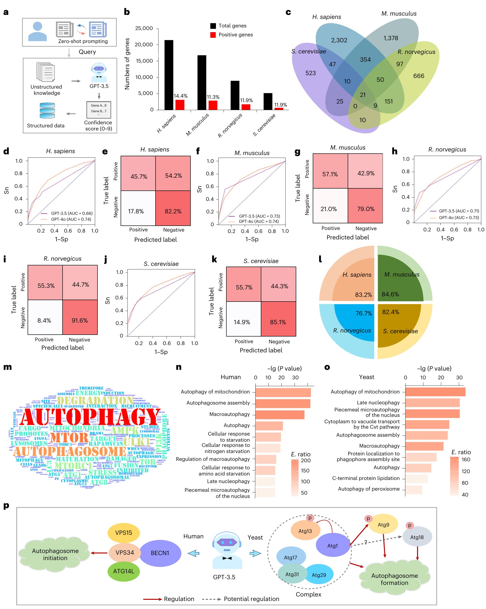
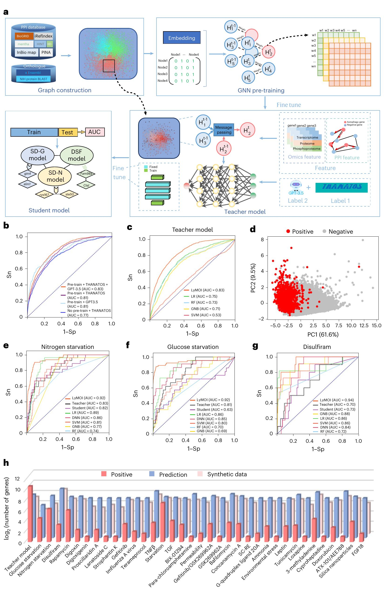
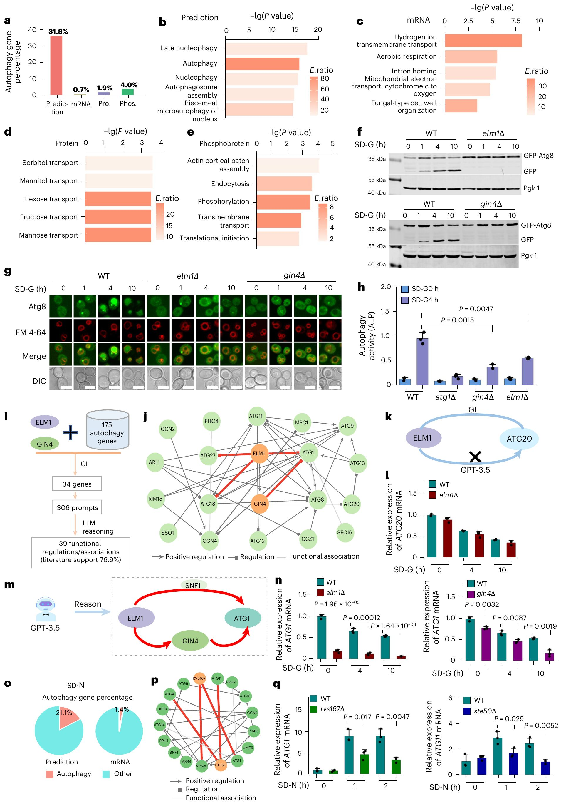
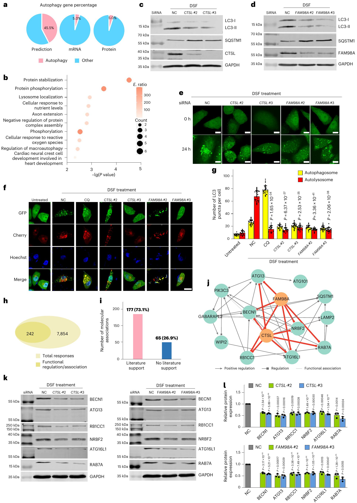
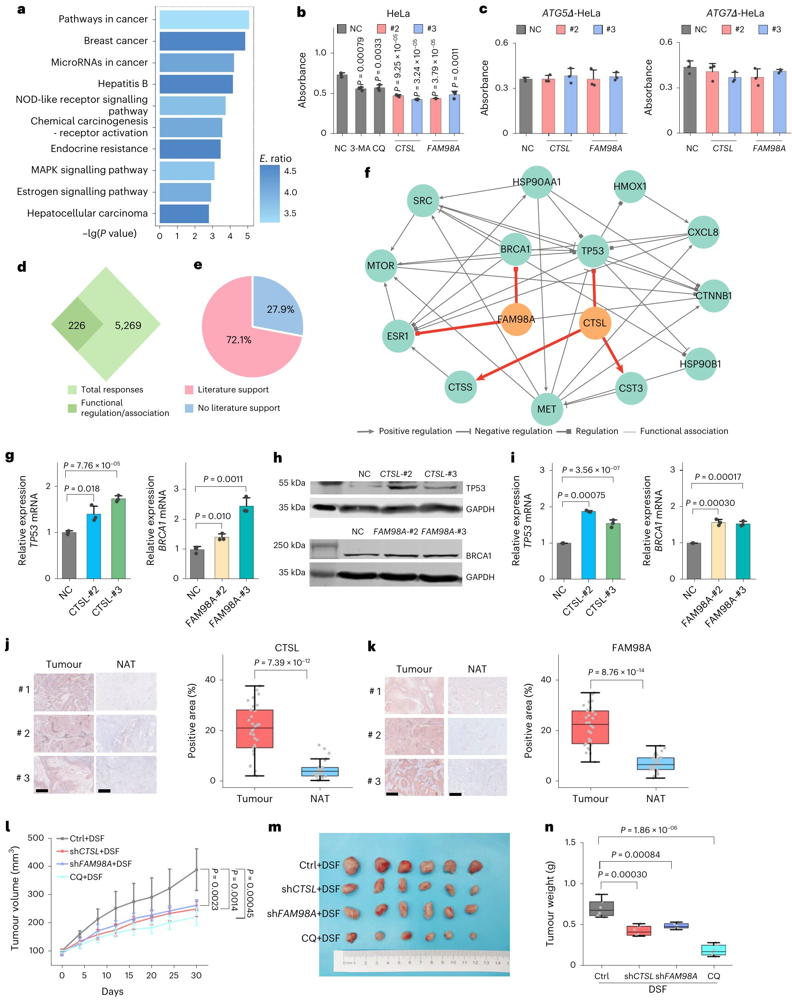
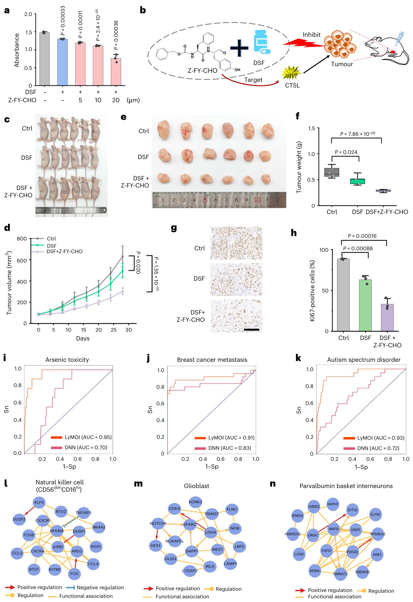

A deep learning and large language hybrid workflow for omics interpretation
假设你测了一组转录组/蛋白质组/磷酸化组数据，里面有成千上万个"变化了的分子"。传统方法能告诉你"哪些分子变了"，但几乎回答不了"为什么变？怎么变的？哪些是关键调控因子？"。LyMOI 就像一个"深度学习侦探 + 语言模型百科全书"的组合：先用图神经网络从多组学数据中预测出最可能的调控因子（Molecules of Interest, MOIs），再用 GPT-3.5 的 Chain-of-Thought 推理写出类似生物学家的机制解释。
高通量测序产生了海量组学数据——转录组、蛋白质组、磷酸化组——但解读这些数据的方法（差异表达分析+富集分析）几十年来没有本质变化。这些方法告诉你"哪个基因变了"，但"这意味着什么生物学意义"仍然需要人类专家花大量时间阅读文献来推断。打个比方：传统方法给你一张零件清单，LyMOI给你一本组装说明书。
| 方法 | 能做 | 不能做 |
|---|---|---|
| 差异表达分析(DEG) | 识别表达量变化的基因 | 无法区分因果调控因子 vs 下游效应 |
| GO/KEGG富集分析 | 发现富集通路 | 高度依赖数据库完整性，无法做机制推理 |
| 网络建模 | 展示分子间关系 | 大多忽略进化保守性和上下文特异性 |
差异表达分析的核心是用统计模型判断：一个基因在两种条件（如处理 vs 对照）下的表达量差异是否超出随机波动的范围。最常用的工具是 DESeq2 和 edgeR，两者均基于负二项分布（Negative Binomial）来建模 RNA-seq 的计数数据：
$$ K_{ij} \sim \text{NB}(\mu_{ij}, \alpha_i) $$其中 $K_{ij}$ 是基因 $i$ 在样本 $j$ 中的 read count，$\mu_{ij}$ 是期望表达值（受测序深度和条件效应共同决定），$\alpha_i$ 是基因特异性的离散度参数——用来捕捉"同一个基因在同条件下的重复样本间，计数方差远大于泊松分布所预测的方差"这一生物学事实（即过度离散 overdispersion）。
DESeq2 的核心步骤：
统计显著性只告诉你"这个基因的表达量发生了超出随机噪声的变化"，但不提供因果方向信息。在自噬研究中的具体困境：
富集分析回答的问题是："在我的差异基因列表中，某些功能类别（如某个 GO term 或 KEGG 通路）的基因是否比随机期望更多？" 其数学核心是超几何检验（Hypergeometric Test），等价于 Fisher 精确检验：
$$ P(X \ge k) = 1 - \sum_{i=0}^{k-1} \frac{\binom{K}{i} \binom{N-K}{n-i}}{\binom{N}{n}} $$其中：$N$ = 基因组中所有被检测的基因总数，$K$ = 属于该功能类别的基因数，$n$ = 差异基因列表的大小，$k$ = 差异基因中实际属于该类别的基因数。这个公式计算的是：在"差异基因是从全基因组中随机均匀抽取"的零假设下，观察到 $k$ 个或更多该类基因的累积概率。
标准工作流：对每个 GO term / KEGG pathway 计算超几何 p 值 → Benjamini-Hochberg FDR 校正 → 选取 $q \lt 0.05$ 的显著富集条目 → 生成条形图/气泡图。
| 局限 | 具体表现 | 实例 |
|---|---|---|
| 数据库依赖性 | GO 和 KEGG 的注释覆盖度有限——许多基因的功能注释不完整或缺失，尤其是在非模式物种中 | 酵母中仍有 ~20% 的基因缺乏 GO 生物过程注释；人类中许多 lncRNA 未被 KEGG 收录 |
| 无方向性 | 富集分析告诉你"自噬通路被扰动"，但不告诉你扰动是激活还是抑制——需要人类专家额外判断 | "Autophagy" 通路在两种条件下都显著富集，但一种条件下自噬上调、另一种条件下自噬被阻断 |
| 无因果链 | 富集结果是一条路名单，不是一条因果推理链。它说 mTOR 通路受影响，但不说"什么调控了 mTOR → mTOR 调控了什么 → 最终效应是什么" | LyMOI 的机器 CoT 正是为了填补这个缺口：从 PPI 网络 + 多组学数据中推导完整的因果叙事 |
| 忽略上下文特异性 | 同一个 KEGG 通路在不同条件/组织/物种中可能有完全不同的功能角色，但富集分析将其一概而论 | mTOR 通路在营养充足时促进生长、在饥饿时被抑制——但 KEGG 只有一个"mTOR signaling pathway"条目 |
网络建模将生物分子抽象为节点（nodes），将它们的相互作用抽象为边（edges）。在组学解读中最常使用的三类方法：
1. 蛋白质-蛋白质互作网络（PPI Network）——从 STRING、BioGRID 等数据库获取实验验证或预测的蛋白互作关系。每个蛋白是一个节点，互作关系是边。分析手段包括：
2. 加权基因共表达网络分析（WGCNA）——基于表达数据构建共表达网络，将表达模式相似的基因聚类为"模块"，并将模块与表型关联。WGCNA 使用软阈值（soft thresholding）而非硬切割来保留连续信息：
$$ a_{ij} = |\text{cor}(x_i, x_j)|^{\beta} $$其中 $\text{cor}(x_i, x_j)$ 是基因 $i$ 和 $j$ 的表达谱 Pearson 相关系数，$\beta$ 是软阈值参数——选择使得网络最接近无标度拓扑的值。
3. 图嵌入方法（Node2Vec / DeepWalk）——将图的节点映射到低维向量空间，使拓扑上相近的节点在向量空间中也相近。Node2Vec 的核心是一个带偏置的随机游走策略：
$$ P(c_i = x \mid c_{i-1} = v) = \begin{cases} \frac{\pi_{vx}}{Z} & \text{if } (v, x) \in E \\ 0 & \text{otherwise} \end{cases} $$其中 $\pi_{vx} = \alpha_{pq}(t, x) \cdot w_{vx}$ 是带偏置的转移概率——参数 $p$ 控制"返回上一节点"的概率（鼓励局部探索 vs 离开），参数 $q$ 控制"向外探索 vs 向内徘徊"（区分 BFS 和 DFS）。生成大量随机游走路径后，用 Skip-gram 模型学习每个节点的向量表示。
| 传统方法 | 核心缺陷 | LyMOI 的改进 |
|---|---|---|
| 静态 PPI 网络分析 | 网络结构固定——STRING 数据库中的互作关系是"所有条件下都可能发生"的通用 PPI，无法反映条件特异性（氮饥饿 vs 葡萄糖饥饿下的关键蛋白完全不同） | GCN 的分层微调：教师模型学习通用网络拓扑 → 34 个条件特异性学生模型分别在各自条件的数据上微调，捕获条件特异性调控因子 |
| WGCNA 共表达网络 | 仅使用转录组数据——忽略了蛋白质层面的互作、翻译后修饰、信号传导等关键信息层 | GCN 的多组学节点特征：每个蛋白节点融合了转录组 + 蛋白质组 + 磷酸化组的多层特征维度 |
| Node2Vec/DeepWalk 图嵌入 | 无监督学习——学到的向量表示反映的是通用拓扑相似性，而非"针对自噬这个特定功能的相关性"。且完全没有利用节点的组学特征数据 | GCN 的半监督学习：用已知的 6,502 个自噬/细胞死亡基因作为正样本标签，以 edge weight 优化和 node weight 优化两步来训练——学到的嵌入直接服务于自噬调控因子的识别任务 |
| 所有传统方法 | 忽略进化保守性——仅在单一物种内分析，无法利用"如果基因在酵母、小鼠、人中均与自噬相关，则更可能是一个保守的核心调控因子"这一强大先验 | LGM 的跨物种图：562 个真核物种 × 1,870 万 PPI，通过直系同源（ortholog）关系将不同物种的同源蛋白连接。GCN 消息传递跨越物种边界——单物种 AUC +4.4-9.5% |
ChatGPT/GPT-3.5 训练数据中包含大量生物医学知识，但它面临两个关键挑战：(1) 知识截止到2022年1月——无法获取最新科学发现；(2) AI幻觉——会自信地说出看似合理但实际错误的回答。LyMOI通过精心设计的提示工程和混合架构来应对这些挑战。
↑ 返回目录↑ Back to contentsLyMOI 的核心理念可以概括为"定量预测 + 定性推理"。图卷积网络（GCN）负责定量部分：在多组学数据和蛋白质相互作用网络中"算"出哪些分子最可能是关键调控因子。GPT-3.5 负责定性部分：用自然语言"写"出这些分子如何通过哪个信号通路调控生物过程的机制解释。
原论文 Figure 1 把整个混合框架画成了一张管线总览图，正好与下面"三步工作流"逐一对应：左边是 GPT-3.5 零样本提示合成数据集，中间是大图模型（LGM）的预训练与条件特异性预测，右边是 LLM 对 MOIs 的分子关联推理：

原论文 Figure 1：LyMOI 混合框架工作流总览。(a) 三步管线：① LLM 合成数据集——GPT-3.5 零样本提示为 4 个真核物种（人/小鼠/大鼠/酵母）的全基因组基因逐个生成"基因/蛋白→功能→过程→置信度(0-9)"的 PGP 表格（共 138,030 个提示）；② 大图模型（LGM）预测——以含 562 物种、1,093,931 个蛋白、1.87 亿条互作/直系同源边的知识图谱加上 1.3TB 自噬相关多组学数据训练教师模型（自噬调控基因为标签），再微调出 SD-G/SD-N/DSF 等条件特异性学生模型，输出自噬 MOIs（如 CTSL、FAM98A）；③ LLM CoT 推理——对 MOIs 及其分子关联做机制解释，并延伸到砷毒性、乳腺癌转移与自闭症谱系障碍的解读。(b) 多组学数据规模：mRNA、蛋白质（Pro.）、磷酸化蛋白（Phos.）及三类差异分子（DEMs/DEPs/DRPs）的数量（log2 计数）。
图源：Tang et al., Nature Biomedical Engineering (2025)。
Step 1：LLM合成数据集 —— GPT-3.5零样本提示生成56,980个prompt-generation pairs (PGPs)，为每个基因评估其参与自噬的置信度(0-9分)，作为扩展训练标签
Step 2：大图模型(LGM)预训练+分层微调 —— 构建含1.87亿PPI/互作关系的跨物种知识图谱 → GCN预训练(教师模型) → 34个条件的独立学生模型微调 → 预测条件特异性MOIs
Step 3：LLM Chain-of-Thought推理 —— 对预测的MOIs用GPT-3.5做机制解释，生成"机器CoT"，类似生物学家的因果推理过程
GCN是一种在图上进行深度学习的神经网络。在LGM中，每个节点是一个蛋白质，边是蛋白质-蛋白质相互作用。GCN通过消息传递(message passing)机制，让每个节点的特征向量聚合其邻居节点的信息，从而学习到同时反映自身表达水平和网络拓扑的特征表示。LyMOI中的GCN经过两轮预训练：先用6,502个已知自噬/细胞死亡基因做edge weight优化，再用1.3TB多组学数据做node weight优化。
让GPT-3.5判断"基因X是否参与自噬"很容易产生幻觉——当你随便问时它可能说"是"，但当你让它先总结基因功能再判断，它的准确率就大幅提升。LyMOI团队设计了精巧的零样本提示策略：让GPT-3.5先列出基因功能，再给出参与自噬的置信度(0-9分)。这种方法使GPT-3.5对"高置信度(>6)基因"的判断准确率达到83%(人类)、85%(小鼠)、77%(大鼠)、82%(酵母)。
上面的"高置信准确率"只是这套评估的一个截面——原论文 Figure 2 用 16 个面板系统展示了 GPT-3.5/GPT-4o 在四个物种上的自噬基因解读能力，从阳性响应率、ROC/混淆矩阵、文献核对准确率到词云与 GO 富集逐一给出证据：

原论文 Figure 2：用 LLM 对自噬过程做全基因组解读。(a) 零样本提示策略示意：LLM 先总结基因功能，再判断该基因是否与自噬相关并给出 0-9 分置信度。(b) 四物种中判定为潜在自噬相关（置信度>0）基因的阳性响应率：人 14.4%、大鼠 11.9%、小鼠 11.3%、酵母 11.9%。(c) 四物种直系同源蛋白维恩图（21 个 ATG 基因/自噬调控因子在 4 物种中高度保守）。(d-k) GPT-3.5 与 GPT-4o 在人/小鼠/大鼠/酵母上的性能评估：ROC 曲线与 AUC（d,f,h,j：GPT-3.5 为 0.66/0.73/0.71/0.72，GPT-4o 进一步提升为 0.74/0.74/0.73/0.76）及混淆矩阵（e,g,i,k：灵敏度 45.7%-55.7%，特异度 79.0%-91.6%——低假阳性）。(l) 置信度>6 的 PGP 经文献人工核对后的准确率：人 83.2%、小鼠 84.6%、大鼠 76.7%、酵母 82.4%。(m) 机器 CoT 关键词词云：除 autophagy/autophagosome 外，GPT-3.5 主要指向 mTOR 信号通路与降解机制。(n,o) 人（n）与酵母（o）正样本基因的 GO 富集分析（线粒体自噬、自噬体组装、巨自噬等条目显著富集，双尾超几何检验）。(p) GPT-3.5 对两个经典自噬基因的推理解读示例。
图源：Tang et al., Nature Biomedical Engineering (2025)。
| 物种 | AUC (GPT-3.5) | AUC (GPT-4o) | 灵敏度 | 特异度 | 高置信准确率 |
|---|---|---|---|---|---|
| 人类 | 0.66 | 0.74 | 45.7% | 82.2% | 83.2% |
| 小鼠 | 0.73 | 0.74 | 57.1% | 79.0% | 84.6% |
| 大鼠 | 0.71 | 0.73 | 55.3% | 91.6% | 76.7% |
| 酵母 | 0.72 | 0.76 | 55.7% | 85.1% | 82.4% |
低假阳性率(特异度79-92%)是关键——说明GPT-3.5不太会"编造"不存在的自噬关联。
即便如此，机器CoT仍会产生幻觉。例如GPT-3.5描述Atg1磷酸化Atg18的关系——这在文献中没有报道。因此，LyMOI的所有预测都需要实验验证。这也是为什么LyMOI的设计是"AI辅助发现"而非"AI替代实验"。
LyMOI的核心假设非常直觉化：如果一个蛋白质(1)与许多已知的自噬调控蛋白有直接相互作用，且(2)在特定条件下的多组学表达模式与已知调控因子相似，那么它很可能也是一个自噬调控因子。这个假设通过一个跨越562个物种的巨型蛋白质互作图谱来实现——大图模型(LGM)就像一张"蛋白质社交网络"，GCN在这个网络上学习"谁和谁是好朋友，谁是关键人物"。
这套 LGM 的完整预训练管线与性能评估浓缩在原论文 Figure 3——从 PPI 构图、两轮预训练、教师-学生微调，到三个条件下与传统机器学习方法的 ROC 对比，正好与本节内容逐一对应：

原论文 Figure 3：LyMOI 框架总览与性能评估。(a) 框架示意：由 7 个公共 PPI 数据库（BioGRID/iRefIndex/mentha/HINT/IID/InBioMap/PINA）与直系同源关系（Ensembl/NIH protein BLAST）构图 → 随机初始化节点特征做 GCN 预训练（已报道的自噬和/或细胞死亡基因为正样本，训练至损失不再下降）→ 权重迁移到教师模型（融合组学+PPI 特征，以 THANATOS 数据库+GPT-3.5 合成数据为正样本，消息传递聚合特征后接全连接层）→ 再迁移到各条件特异性学生模型（氮饥饿/葡萄糖饥饿/DSF 等）。(b) 消融实验：有/无 GCN 预训练、有/无 GPT-3.5 合成数据集下的 AUC——完整配置（预训练+THANATOS+GPT-3.5）AUC=0.83，无预训练仅 0.77。(c) 教师模型（AUC 0.83）与 LR（0.75）、RF（0.73）、GNB（0.71）、SVM（0.53）的对比。(d) 教师模型的 PCA 图：正、负样本两组分布分离（PC1 61.6%），支持预测可靠性。(e-g) 氮饥饿、葡萄糖饥饿、DSF 处理三条件下 LyMOI（AUC 0.92/0.92/0.94）与仅教师模型、仅学生模型及 LR/DNN/RF/GNB/SVM 的 ROC 对比——完整分层架构优于任一单独模型。(h) 非特异/特异条件下用于扩展数据的正样本基因、扩展数据与合成数据的数量构成（log2 计数）。
图源：Tang et al., Nature Biomedical Engineering (2025)。
LGM 的预训练分两轮，每轮解决不同的问题：
第一轮：edge weight 优化（学习"网络的骨架"）
初始 PPI 图来自 STRING 数据库，每条边的权重 $w_{uv}$ 是综合得分（0-1）。但这些权重的校准对象是"任意条件下互作的概率"，而非"在自噬中的功能关联程度"。第一轮预训练用 6,502 个已知自噬/细胞死亡基因作为正样本标签，通过图注意力机制（GAT）重新校准边权重：
$$ \alpha_{uv} = \frac{\exp(\text{LeakyReLU}(\mathbf{a}^T [\mathbf{W}\mathbf{h}_u \parallel \mathbf{W}\mathbf{h}_v]))}{\sum_{k \in \mathcal{N}(u)} \exp(\text{LeakyReLU}(\mathbf{a}^T [\mathbf{W}\mathbf{h}_u \parallel \mathbf{W}\mathbf{h}_k]))} $$其中 $\mathbf{h}_u, \mathbf{h}_v$ 是节点初始特征（one-hot 物种+蛋白ID），$\mathbf{W}$ 是共享线性变换，$\mathbf{a}$ 是可学习注意力向量，$\parallel$ 表示拼接，$\mathcal{N}(u)$ 是 $u$ 的邻居集。本质：让 GCN 学会沿"自噬功能相关的边"传递消息，而非在 STRING 所有边上等权传递。
第二轮：node weight 优化（学习"节点的条件状态"）——每个节点的特征从 one-hot 升级为从 1.3TB 多组学数据提取的多维向量：
$$ \mathbf{x}_v^{\text{multi-omics}} = [\text{RNA-seq}_v \parallel \text{proteomics}_v \parallel \text{phosphoproteomics}_v] $$GCN 的消息传递层（堆叠 2-3 层）逐层更新节点表示：
$$ \mathbf{h}_v^{(l+1)} = \sigma\left( \sum_{u \in \mathcal{N}(v)} \alpha_{vu} \cdot \mathbf{W}^{(l)} \mathbf{h}_u^{(l)} \right) $$$\sigma$ 为 ReLU，$\alpha_{vu}$ 为第一轮学到的注意力权重（此阶段冻结），$\mathbf{W}^{(l)}$ 为第 $l$ 层可学习权重。$L$ 层传播后，最终嵌入 $\mathbf{h}_v^{(L)}$ 融合：① PPI 拓扑位置（邻居聚合）② 自身多组学特征 ③ 跨物种 ortholog 信号。
| 阶段 | 类比 | LGM 实现 |
|---|---|---|
| 教师模型 （通用预训练） | 医学院基础课程——学习解剖、生理、病理的通用知识。所有医学生不论未来专科都要上。 | 混合 34 个条件的多组学数据 + 跨物种 PPI 图训练一个 GCN。教师模型学习"什么是自噬调控因子的通用模式"——如 PPI 网络中心性、与已知自噬基因的共表达趋势。 |
| 学生模型 （条件特异性微调） | 住院医师专科培训——心内科专门学心脏，神经科专门学脑部。在通识基础上发展专科深度。 | 以教师模型权重为初始化，在 34 个条件特异性数据集上独立微调 34 个学生模型。氮饥饿学生模型专门学氮饥饿下的自噬模式，DSF 处理学生模型专门学 DSF 诱导的自噬模式。 |
为什么必须分层？如果每个条件独立冷启动训练 GCN，小样本条件（某些条件仅几十个已知正样本）会严重过拟合。教师预训练提供强力先验——学生模型只需微调"该条件下有何不同"。数值验证：教师 AUC = 0.83，34 个学生微调后平均 AUC 升至 0.88+，其中氮饥饿/葡萄糖饥饿/DSF 三个条件达 0.92-0.94。
酵母激酶 Gin4——此前从未被报道与自噬相关——LyMOI 在葡萄糖饥饿条件下将其预测为自噬调控因子，后续敲除实验验证了该预测。
输入层：Gin4 的初始表示
第一轮 edge weight 优化后：
3 层 GCN 消息传递：
第 1 层：Gin4 聚合 127 个邻居——Snf1（$\alpha = 0.73$）和 Elm1（$\alpha = 0.58$，另一候选调控因子）贡献最大。
第 2 层：Gin4 进一步接收"邻居的邻居"——Snf1 的互作伙伴 Atg1、Atg13（核心自噬机器组件）的嵌入间接流入 Gin4。
第 3 层：Gin4 的最终嵌入融合为：
$$ \mathbf{h}_{\text{Gin4}}^{(L)} \approx 0.73 \cdot \text{Snf1信号} + 0.58 \cdot \text{Elm1信号} + 0.21 \cdot \text{Atg1信号(间接)} + \text{自身多组学特征} $$预测输出：最终嵌入送入单层 MLP + sigmoid 分类头：
$$ P(\text{Gin4 是自噬调控因子} \mid \text{葡萄糖饥饿}) = \sigma(\mathbf{w}^T \mathbf{h}_{\text{Gin4}}^{(L)} + b) = 0.87 $$$0.87 \gt 0.5$ → LyMOI 预测 Gin4 为"葡萄糖饥饿条件下的自噬调控因子"，输出排名和置信度。后续酵母 $GIN4$ 敲除实验证实：敲除株在葡萄糖饥饿下自噬活性显著降低。
这才是论文的"硬核"部分——LyMOI 不仅做出了预测，还通过一系列湿实验验证了预测的正确性。在4个物种中验证了6个全新的自噬调控因子，其中最令人兴奋的是发现了CTSL和FAM98A这两个人癌蛋白在disulfiram诱导自噬中的关键作用——并由此推导出一个可立即测试的癌症联合治疗方案。
酵母部分的全部验证证据汇总在原论文 Figure 4：面板 a-n 围绕葡萄糖饥饿下的 Gin4/Elm1（对应 5.1 节），面板 o-q 对应氮饥饿下的 Rvs167/Ste50（对应 5.2 节），正好与下面两小节逐一呼应：

原论文 Figure 4：酵母自噬新调控因子的鉴定。(a) LyMOI 预测基因与转录组/蛋白质组/磷酸化组差异分子中已报道自噬调控基因的占比对比——LyMOI 预测的前 44 个 MOI 中 14 个（31.8%）已报道，而三类差异分子仅 0.7%-4.0%。(b-e) 前 5 位 GO 富集结果（E. ratio，富集比）：LyMOI 预测基因（b）与转录组 DEMs（c）、蛋白质组 DEPs（d）、磷酸化组差异磷酸化蛋白（e）对比——自噬相关通路只在 LyMOI 预测中高度富集。(f) 葡萄糖饥饿（SD-G）0/1/4/10h 下 WT、elm1、gin4 菌株的免疫印迹结果。(g) 同条件下三菌株的自噬成像表型及定量（标尺 5μm）。(h) 葡萄糖饥饿 0/4h 下 WT、gin4、elm1 菌株的碱性磷酸酶（ALP）活性。(i) LyMOI 推断的关键基因潜在分子关联示意图。(j) 以 ELM1 和 GIN4 为中心、基于 LLM 推理分子关联的调控网络。(k) ELM1 与 ATG20 调控关系的 GI（基因互作）+ LLM 双重推理。(l) elm1 菌株中 ATG20 mRNA 表达。(m) LLM 推理揭示 ELM1/GIN4 在自噬中的关键调控机制。(n) elm1（左）与 gin4（右）菌株中 ATG1 mRNA 表达。(o) 氮饥饿（SD-N）下 LyMOI 预测基因与转录组 DEMs 中自噬基因占比。(p) 以 STE50 和 RVS167 为中心的分子调控网络。(q) rvs167 与 ste50 菌株中 ATG1（左）与 ATG11（右）mRNA 表达。n=3 独立生物学重复，均值±s.d.，非配对双尾 t 检验。
图源：Tang et al., Nature Biomedical Engineering (2025)。
在葡萄糖饥饿条件下，LyMOI预测了44个候选MOIs，其中14个(31.8%)是已报道的自噬调控因子——远超差异表达分析的0.7%-4.0%。通过酵母敲除库筛选24个候选菌株，Gin4和Elm1被验证为新型自噬调控因子。免疫印迹、荧光显微镜和碱性磷酸酶(ALP)活性实验一致证实：敲除GIN4或ELM1显著降低自噬活性。
更有趣的是，LLM推理揭示Elm1通过调控ATG20和ATG1的转录来调节自噬——qPCR实验证实了这些转录变化，说明机器CoT的推理并非"瞎猜"，而是有生物学依据的。
在氮饥饿条件下，两个新的自噬调控因子被验证：Rvs167和Ste50。LLM推理构建了以RVS167和STE50为中心、包含ATG9/ATG11/ATG13等核心自噬机器的分子调控网络。qPCR证实敲除RVS167降低ATG1表达，敲除STE50降低ATG11表达。
CTSL 与 FAM98A 的完整验证证据链见原论文 Figure 5：从 siRNA 沉默后的 LC3-II/SQSTM1 免疫印迹，到 GFP-LC3 点状聚集与 mCherry-GFP-LC3 自噬流成像，再到 LLM 推理出的调控网络——层层递进地证明这两个蛋白是 DSF 诱导自噬的关键因子：

原论文 Figure 5：FAM98A 与 CTSL 是 DSF 介导自噬激活的关键因子。(a) LyMOI 预测基因、转录组 DEMs、蛋白质组 DEPs 中自噬调控基因占比的对比。(b) LyMOI 预测基因的前 10 位 GO 富集结果。(c,d) 沉默 CTSL（c）或 FAM98A（d）后 LC3-II 与 SQSTM1 蛋白表达的免疫印迹及相对定量——LC3-II 下降、SQSTM1 上升，指示 DSF 诱导的自噬流受阻。(e) DSF 处理 0/24h 后、沉默 CTSL 或 FAM98A 的 HeLa 细胞中 GFP-LC3 点状聚集的共聚焦成像（标尺 10μm，n=30 个细胞）。(f,g) 转染 mCherry-GFP-LC3（f）后经 siRNA 沉默与 DSF 处理，检测自噬体（黄色）与自溶酶体（红色）的形成（g，标尺 20μm）。(h) 全部 LLM 回复中获得的分子调控关系数量。(i) LLM 推理所得调控关系中有/无文献支持的分布。(j) 以 CTSL 和 FAM98A 为中心的自噬分子关联子网络。(k,l) 沉默 CTSL/FAM98A 后 ATG13、RB1CC1、BECN1、NRBF2、ATG16L1 与 RAB7A 的蛋白表达（k）及对应 siRNA（l）。NC 为阴性对照；n=3 独立生物学重复，均值±s.d.，非配对双尾 t 检验。
图源：Tang et al., Nature Biomedical Engineering (2025)。
Disulfiram (DSF) 是一种FDA批准的戒酒药物，近年被发现具有抗癌活性。LyMOI 预测了DSF处理条件下的自噬调控因子，发现CTSL（组织蛋白酶L）和FAM98A在其中发挥关键作用：
这一发现的重要性在于：DSF已在临床使用数十年，Z-FY-CHO也已有人体安全性数据——这个联合治疗方案距离临床转化只有"一步之遥"。
在讨论跨系统扩展之前，先把上一节的发现推进一步：既然 CTSL/FAM98A 是 DSF 诱导自噬的关键因子，而 DSF 本身具有抗癌活性，那么这一对蛋白是否也参与癌症存活？原论文 Figure 6 用一条从富集分析、细胞增殖到小鼠荷瘤实验的完整证据链给出了肯定回答：

原论文 Figure 6：CTSL 与 FAM98A 通过自噬通路促进癌症存活。(a) 含 CTSL、FAM98A 及其 36 个互作蛋白的 38 蛋白 KEGG 富集分析（双尾超几何检验）——癌症相关通路显著富集。(b) DSF 处理 5 天后 HeLa 细胞的 CCK-8 增殖检测。(c) ATG5（左）与 ATG7（右）缺陷 HeLa 细胞在 DSF 处理 5 天后的 CCK-8 检测——检验阻断自噬对癌细胞增殖的影响。(d) LLM 全部回复中获得的分子调控关系总数。(e) 全部调控关系中有/无文献支持的比例分布。(f) 以 CTSL 和 FAM98A 为中心的癌症分子关联子网络（LLM 推理构建）。(g) 沉默 CTSL 或 FAM98A 后 TP53（左）与 BRCA1（右）的 mRNA 表达。(h,i) 相应沉默后的蛋白表达（h）与对应 siRNA（i）。(j,k) 宫颈癌患者肿瘤与癌旁正常（NAT）组织中 CTSL（j）与 FAM98A（k）的蛋白表达（标尺 500μm，n=30 对样本）。(l-n) NOG 小鼠皮下接种 HeLa、shCTSL-HeLa 或 shFAM98A-HeLa 细胞，肿瘤长至 100mm³ 后隔日 DSF + 每日 CQ（氯喹）治疗共 4 周：肿瘤体积随时间变化（l）、28 天后肿瘤体积（m）与重量（n，n=6）。
图源：Tang et al., Nature Biomedical Engineering (2025)。
LyMOI 不仅适用于自噬，还在6个其他生物系统中进行了评估：砷毒性、乳腺癌转移、自闭症谱系障碍、人类自然杀伤细胞、人类皮层发育细胞、小鼠胚胎组织细胞——覆盖了从毒性到发育到免疫的广泛生物学场景。
这六个附加系统的评估证据在原论文 Figure 7 下半部分（i-n）逐一面世；而上半部分（a-h）则是 DSF+Z-FY-CHO 联合治疗——即本页优势清单中"临床转化潜力"的出处——从细胞实验到小鼠体内的完整验证链：

原论文 Figure 7：联合治疗与 LyMOI 的扩展应用。(a) DSF 与 Z-FY-CHO 抑制剂处理 5 天后 HeLa 细胞的 CCK-8 增殖检测（图中标有显著性 P 值）。(b) Z-FY-CHO（CTSL 特异性抑制剂）联合 DSF 给药作为体内肿瘤治疗策略的示意。(c-h) 裸鼠皮下接种 HeLa 细胞，肿瘤长至 100mm³ 后每日给予 DSF 或 Z-FY-CHO、共治疗 4 周：肿瘤体积随时间变化（d）、28 天后肿瘤体积（e）与重量（f）、肿瘤切片 Ki67 染色（g）及 Ki67 阳性细胞比例（h，标尺 100μm）。(i-k) LyMOI 在三个附加系统中的预测性能评估：砷毒性（i，AUC 0.95）、乳腺癌转移（j，AUC 0.91）、自闭症谱系障碍（k，AUC 0.93）——均高于同图对照 DNN（0.70/0.83/0.72）。(l-n) LLM 推理得到的分子关联信息流：自然杀伤细胞（l，CD56dim CD16hi 亚群）、胶质母细胞（m）、小白蛋白篮状中间神经元（n），以正调控/负调控/功能关联三类关系连接各基因。
图源：Tang et al., Nature Biomedical Engineering (2025)。
| 局限 | 影响 |
|---|---|
| LLM幻觉仍存在 | 机器CoT需实验验证，不能直接采信 |
| 依赖提示工程 | 零样本提示质量直接影响GPT-3.5输出质量 |
| GPT-3.5知识截止2022.1 | 无法利用最新文献发现 |
| GCN需要正样本训练 | 对于完全没有已知调控因子的过程难以应用 |
| 单一生理过程验证 | 核心验证集中在自噬，其他系统验证较浅 |
LyMOI 的 GCN 虽然通过注意力权重提供了部分可解释性，但尚未达到碱基分辨率的调控机制解读。McAnany et al. (2026) — PISA 提出的二维归因矩阵方法正是解决这一问题的工具：将 sequence-to-function 模型的每个预测映射回输入碱基的贡献，实现从"哪些基因被调控"到"哪些碱基驱动了这种调控"的跨越。LyMOI 的蛋白互作网络推理与 PISA 的顺式调控序列解读，分别从基因网络和DNA 序列两个尺度解码生物学调控逻辑，两者结合可构成完整的多尺度组学解读框架。
LyMOI 是一套"GCN算数 + GPT讲故事"的混合系统——GCN在分子网络中精准定位关键调控因子，GPT-3.5用生物学家的语言解释它们如何工作。最重要的是，它不仅预测，还通过酵母敲除和小鼠肿瘤模型验证了这些预测，完成了"从计算到实验到潜在疗法"的完整闭环。